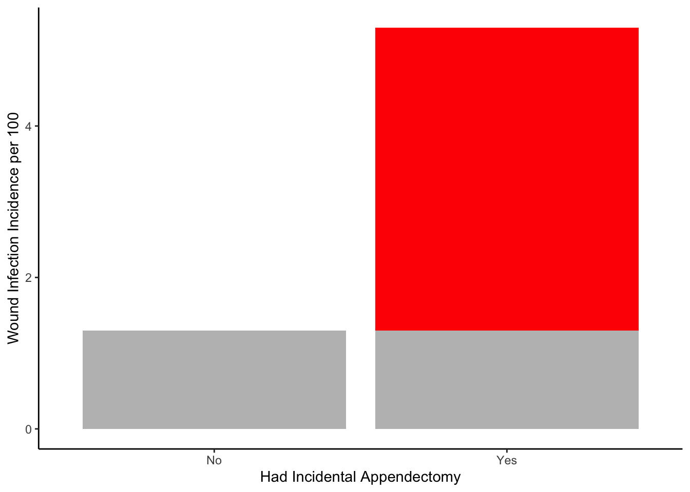

8 Risk Difference
🗒Side Note: Risk difference may be too narrow for a chapter. At some point, I will probably change this note to measures of disease occurrence. I just don’t have time to do it tonight.
8.1 âï¸Overview
This chapter is about calculating and interpreting risk differences.
Are a risk difference in an attributable risk the same thing? Yes, but attributable risk is an older term and it’s use is discouraged. https://sphweb.bumc.bu.edu/otlt/mph-modules/ep/ep713_association/ep713_association_print.html
How do you interpret an attributable risk? https://sphweb.bumc.bu.edu/otlt/mph-modules/ep/ep713_association/ep713_association_print.html
8.2 🌎Useful websites
Then note on Contingency Tables
8.3 📦Load packages
library(dplyr, warn.conflicts = FALSE)
library(ggplot2)Using an example from the Boston University website:
8.4 Data Summary
Consider the following example regarding the management of Hodgkin lymphoma, a cancer of the lymphatic system.
Years ago when a patient was diagnosed with Hodgkin Disease, they would frequently undergo a surgical procedure called a “staging laparotomy.†The purpose of the staging laparotomy was to determine the extent to which the cancer had spread, because this was important information for determining the patient’s prognosis and optimizing treatment. At times, the surgeons performing this procedure would also remove the patient’s appendix, not because it was inflamed; it was done “incidentally†in order to ensure that the patient never had to worry about getting appendicitis. However, performing an appendectomy requires transecting it, and this has the potential to contaminate the abdomen and the wound edges with bacteria normally contained inside the appendix. Some surgeons felt that doing this “incidental appendectomy†did the patient a favor by ensuring that they would never get appendicitis, but others felt that it meant unnecessarily increasing the patient’s risk of getting a post-operative wound infection by spreading around the bacteria that was once inside the appendix.
To address this, the surgeons at a large hospital performed a retrospective cohort study. They began by going through the hospital’s medical records to identify all subjects who had had a “staging laparotomy performed for Hodgkin.†They then reviewed the medical record and looked at the operative report to determine whether the patient had an incidental appendectomy or not. They then reviewed the progress notes, the laboratory reports, the nurses notes, and the discharge summary to determine whether the patient had developed a wound infection during the week after surgery. The investigators reviewed the records of 210 patients who had undergone the staging procedure and found that 131 had also had an incidental appendectomy, while the other 79 had not.
The data from that study are summarized in the table below. The numbers in the second and third columns indicate the number of subjects who did or did not develop a post-operative wound infection among those who had the incidental appendectomy (in the “Yes†row) and those who did not have the incidental appendectomy (in the “No†row). For example, the upper left cell indicates that seven of the subjects who had an incidental appendectomy (the exposure of interest) subsequently developed a wound infection. The upper right cell indicates that the other 124 subjects who had an incidental appendectomy did NOT develop a wound infection.
| Had incidental appendectomy? | Wound infection | No wound infection | Total |
| Yes | 7 | 124 | 131 |
| No | 1 | 78 | 79 |
| Total | 8 | 202 | 210 |
8.5 🔢Simulate data
First, simulate the data as a 2x2 contingency table. Here, we will experiment with structuring the contingency table in a few different ways.
8.5.1 Simulate a matrix object
Create a contingency table using a matrix object.
matrix <- matrix(
c(a = 7, b = 124,
c = 1, d = 78),
ncol = 2,
byrow = TRUE
)
# Add names to make the matrix more readable
rownames(matrix) <- c("Appendectomy", "No Appendectomy")
colnames(matrix) <- c("Infection", "No Infection")
matrix## Infection No Infection
## Appendectomy 7 124
## No Appendectomy 1 788.6 📈Analysis
8.6.1 Incidence proportion
Before calculating any other measures of occurrence, we first need to calculate the incidence proportion in each exposure group.
crosstab_mat <- cbind(matrix, rowsum = rowSums(matrix))
crosstab_mat## Infection No Infection rowsum
## Appendectomy 7 124 131
## No Appendectomy 1 78 79ip <- crosstab_mat[, "Infection"] / crosstab_mat[, "rowsum"]
crosstab_mat <- cbind(crosstab_mat, ip)
crosstab_mat## Infection No Infection rowsum ip
## Appendectomy 7 124 131 0.05343511
## No Appendectomy 1 78 79 0.012658238.6.2 Risk Differences
Instead of comparing two measures of disease frequency by calculating their ratio, one can compare them in terms of their absolute difference. The risk difference is calculated by subtracting the cumulative incidence in the unexposed group (or least exposed group) from the cumulative incidence in the group with the exposure.
\[ \text{Risk Difference (RD)} = CI_e - CI_u \]
where (\(CI_e\)) = cumulative incidence among the exposed subjects, and (\(CI_u\)) is the cumulative incidence among unexposed subjects.
The risk difference focuses on absolute effect of the risk factor, or the excess risk of disease in those who have the factor compared with those who don’t. Recall that in the wound infection study, the cumulative incidence of infection was 5.3% in the incidental appendectomy group, and only 1.3% in the group without appendectomies. The risk ratio was 4.2, but we can also compute the absolute difference, which is 5.3 / 100 - 1.3 / 100 = 4 per 100 excess wound infections among those who had the incidental appendectomy. \(CI_\)u provides an estimate of the baseline risk (i.e., in the absence of the exposure), and the exposure factor imposes an additional (excess) risk on top of that.
🗒Side Note: Modern Epidemiology 4th edition uses the term incidence proportion instead of cumulative incidence.1
ip_exposed <- crosstab_mat["Appendectomy", "ip"]
ip_unexposed <- crosstab_mat["No Appendectomy", "ip"]
risk_difference <- ip_exposed - ip_unexposed
risk_difference## [1] 0.04077689risk_difference * 100## [1] 4.0776898.6.2.1 Interpretation
Subjects who had an incidental appendectomy had 4 additional cases of wound infection per 100 people compared to subjects who did not have an incidental appendectomy.
Tip 1: If you have cumulative incidence expressed as percentage, convert % to convenient fractions so that you can express it as the excess risk in a group of people who have the risk factor.
Tip 2: Focus your interpretation on the excess risk in the exposed group.
Example: “There were 4 excess wound infections per 100 subjects in the group that had incidental appendectomies, compared to the group without incidental appendectomy.”
Tip 3: Don’t forget to specify the time interval when using cumulative incidence. This was not a problem in the appendectomy study because the time interval was so short and the time frame was implicit (in the postoperative period), but in most studies you need to describe the time interval for the cumulative incidence in words.
Example: “In the group that failed to adhere closely to the Mediterranean diet there were 120 excess deaths per 1,000 men during the two year period of observation compared to the group that did adhere to the Mediterranean diet.”
8.6.2.2 Graph
tibble(
appendectomy = factor(c("No", "No", "Yes", "Yes")),
base_rate = c("Yes", "No", "Yes", "No"),
incidence = c(1.3, 0.0, 1.3, 4.0)
) %>%
ggplot() +
geom_col(aes(x = appendectomy, y = incidence, fill = base_rate)) +
scale_fill_manual(values = c("red", "gray")) +
labs(
x = "Had Incidental Appendectomy",
y = "Wound Infection Incidence per 100"
) +
theme_classic() +
theme(legend.position = "none") 
🗒Side Note: At some point, come back and annotate this to match the figure here. You may also want to add this to the data visualization note.